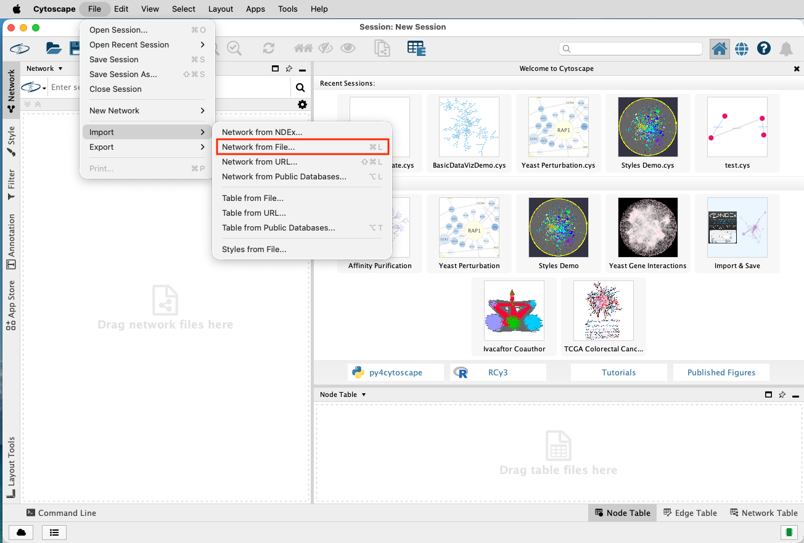
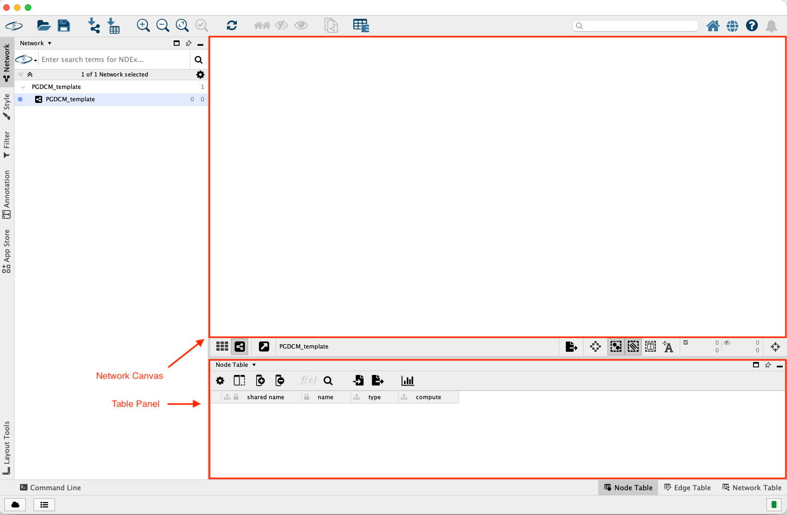
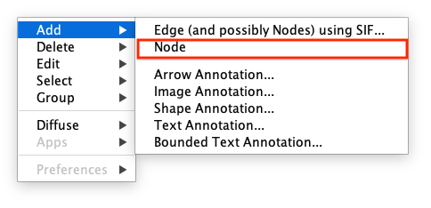
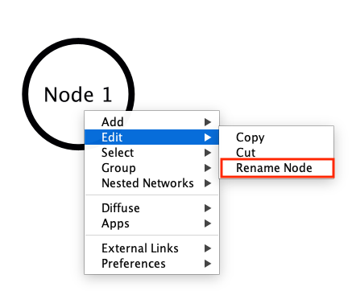
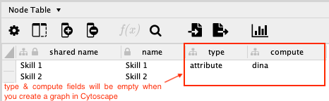
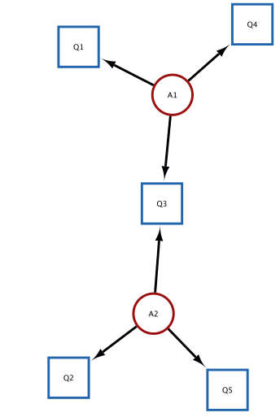
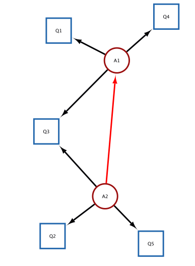

Competency and Evidence Knowledge Model Specification/ Building
Introduction
This tutorial walks through the PGDCM-Cytoscape workflow for visually constructing assessment models. PGDCM aligns closely with the Evidence-Centered Design (ECD) framework, which uses explicit models to connect what we want to measure with the behaviors we can observe:
- Competency Model (Proficiency Model): Represents the latent (unobservable) knowledge, skills, or attributes we want to measure, and how they relate to one another. In Cytoscape, these are your “Attribute” nodes and the edges between them.
- Evidence Model: Defines how observable behaviors (tasks/items) provide evidence for those underlying competencies. In Cytoscape, these are the edges pointing from “Attribute” nodes to “Task” (Item) nodes.
We cover three common scenarios for getting network data into Cytoscape, editing these models visually, and pulling them back into R.
Before running any script, ensure:
- Cytoscape is open and running on your machine.
- Cytoscape is listening on the default port:
http://localhost:1234/v1.
What is Cytoscape?
Cytoscape is an open-source software platform designed for visualizing complex networks and integrating them with attribute data. In the context of PGDCM, we use the RCy3 package in R to automatically pass our graphmodels (Tasks and Attributes) directly into and from the Cytoscape application. This allows us to visually construct, verify, and document our Evidence and Proficiency models before finalizing them for analysis.
Getting Started: Loading the PGDCM Cytoscape Template
To ensure your networks are styled correctly right off the bat, you need to load the custom PGDCM Cytoscape Session template. The pgdcm package provides a handy utility function to extract this template directly to your R working directory.
- In your R console, run
get_Cyto_template()to downloadPGDCM_template.cysinto your working directory. - Launch Cytoscape.
- Go to File > Import > Network from File.. (or press
Ctrl+L/Cmd+L). (see Figure 1) - Locate and select the
PGDCM_template.cysfile you just downloaded. - Once loaded, Cytoscape will have all our custom Visual Styles ready to go.

Navigating the Cytoscape Interface
While building PGDCM models, you will primarily interact with three areas in Cytoscape:
- The Network Canvas (Center): This is where you physically draw edges between Tasks and Attributes. You can click and drag nodes to rearrange the layout to something that makes logical sense for your assessment.

-
The Table Panel (Bottom): This contains the Node Table and Edge Table.
- The nodes table has the following columns:
-
name: Name of the node. -
type: Type of the node (task or attribute). -
compute: Computation method for the node (dina or dino).
-
- The nodes table has the following columns:
The name field is automatically updated when you create a node in the Network Canvas area. The type and compute fields are not. So you will have to manually update them in the Node Table. You don’t have to make any changes in the Edge Table.
Adding Nodes and Edges Manually
In several scenarios, you will need to manually augment the network that R pushed to Cytoscape.
To add a new Node:
- Right-click anywhere in the empty space of the Network Canvas.
- Select Add > Node

- A new node will appear. Immediately go to the Node Table at the bottom, find the new row (it usually has a generated name). To change the name of the node, right click on the node and it will show a drop down menu. Select Edit > Rename Node and enter the new name. The name will updated in both the graph as well as the tables.

- Enter the values for the
type(attribute/task), andcompute(dina,dino, orcontinuous) columns.
Advanced: HO-DINA, IRT, and MIRT Specification
By default, an Attribute with dina computing represents a discrete, binary skillset (Mastery vs. Non-Mastery). However, the PGDCM engine natively supports advanced continuous latent variables simply by modifying the compute column of your root node (a node with no incoming arrows) in the Node Table!
If you change a root attribute’s compute value to continuous , the engine fundamentally changes how the model operates:
- Higher-Order DINA (HO-DINA): If your network has a single continuous root node pointing to discrete child attributes (which then point to tasks), the root node represents a generalized latent ability (), while the discrete children represent specific sub-skills.
- Unidimensional IRT (Item Response Theory): If you only have one continuous root attribute and it points directly to all your task nodes (bypassing any discrete sub-skills), the engine bypasses DINA logic entirely and estimates a standard Unidimensional IRT model.
- Multidimensional IRT (MIRT): If you have multiple continuous root attributes pointing directly to your task nodes, the engine estimates a Multidimensional Item Response Theory model.

To add a new Edge:
- Right-click on the Source node (the node the arrow should point away from).
- Select Add > Edge.
- A line will attach to your cursor. Click on the Target node to complete the edge.
Connecting R to Cytoscape
Before passing any data, we need to ensure R can communicate with your active Cytoscape session. We do this by loading the RCy3 package and “pinging” the default Cytoscape port.
Our custom utility functions (like pushing models or formatting tables) are seamlessly integrated right into the primary pgdcm library.
Scenario 1: Starting from Task Data (Building Models from Scratch)
In this scenario, you start with just a raw response matrix (often an Excel file). The columns represent tasks (items). There are no attribute nodes or edges yet, meaning neither the Competency nor the Evidence model exists.
Our goal is to push the task nodes into Cytoscape, manually build the rest of the network (attribute nodes and all edges), and then pull the completed graph back to R.
Step 1: Push Task Nodes to Cytoscape
First, we read the data, extract the item names, and push them to Cytoscape using our helper function Tasks2CytoNodes().
# Read the X matrix
X <- read_excel("testdatafile.xlsx", sheet = 1)
message(sprintf("Loaded X matrix: %d students × %d items", nrow(X), ncol(X) - 1))
# Drop the Subject column; remaining columns are the task (item) names
task_names <- colnames(X)[-1]
# Build nodes from task names and push to Cytoscape
Tasks2CytoNodes(task_names)Step 2: Build the Network in Cytoscape
At this point, switch to your Cytoscape window.
Cytoscape Node Construction
- You should see standalone task nodes on your canvas.
- Add attribute nodes (e.g., A1, A2). Make sure to set their
typecolumn toattributein the Node Table.- Draw edges from attributes to task nodes (the Evidence model).
- Draw edges between attributes (the Proficiency model).
Step 3: Pull Network Back and Save
Once the network is complete in Cytoscape, we pull it back into R as an igraph object, inspect the data, and save it to a GraphML file.
# Fetch the active network from Cytoscape
myNetwork1 <- pull_from_cytoscape(base.url = cytoPort)
# Extract clean node and edge tables using our utilities
nodes_table1 <- get_NodesTable(myNetwork1)
edges_table1 <- get_EdgesTable(myNetwork1)
# Check out what we got!
head(nodes_table1)
head(edges_table1)
# Save the network for later
write_graph(myNetwork1, "Scenario1_network.graphml", format = "graphml")Scenario 2: Importing an Existing Evidence Model (Q-Matrix)
In this scenario, you have a Q-Matrix. The first column lists task names, and the remaining columns list attribute names. A value of 1 indicates that a specific attribute is required to complete a specific task. This explicitly defines the Evidence Model (edges from Attributes to Tasks).
We will push this Q-Matrix to Cytoscape, which will automatically draw the task nodes, attribute nodes, and evidence edges for us.
We’ll use a mock Q-Matrix for this example. We use the helper QMatrix2CytoNodes() which automatically builds the graph and pushes it. Note that QMatrix2CytoNodes() calls QMatrix2iGraph() internally, which you can use if you only want the igraph object without pushing it.
# Define a mock Q-Matrix
Q_mock <- data.frame(
Task = c("Q1", "Q2", "Q3", "Q4", "Q5"),
A1 = c(1, 0, 1, 1, 0),
A2 = c(0, 1, 1, 0, 1),
stringsAsFactors = FALSE
)
# Build igraph and push to Cytoscape simultaneously
g_qmatrix <- QMatrix2CytoNodes(Q_mock, title = "Scenario2_QMatrix")
Scenario 2 (Continued): Graphically Defining the Competency Model
Once the Evidence Model is pushed to Cytoscape, you can graphically define the Competency Model structure by drawing dependencies (edges) directly between the attribute nodes.
Switch to your Cytoscape window.
Adding Proficiency Edges
- The Task nodes, Attribute nodes, and the evidence edges (Attribute → Task) are already drawn.
- Verify the layout.
- Draw the proficiency model (edges between attributes).

Pulling the Network Back and Save
myNetwork2 <- pull_from_cytoscape(base.url = cytoPort)
# Fetching the nodes and edges from the network in Cytoscape
nodes_table2 <- get_NodesTable(myNetwork2)
edges_table2 <- get_EdgesTable(myNetwork2)
# Displaying the nodes and edges in R
knitr::kable(nodes_table2, caption = "Nodes Table")
knitr::kable(edges_table2, caption = "Edges Table")
# We comment out write_graph here during rendering so it doesn't constantly overwrite your file
# write_graph(myNetwork2, "Scenario2_network.graphml", format = "graphml")Scenario 3: Importing Fully Specified Competency and Evidence Models
In this scenario, you have a full Adjacency Matrix detailing all edges between all nodes. This matrix fully defines both the Competency Model (attribute-to-attribute edges) and the Evidence Model (attribute-to-task edges). The first column contains all node names (both tasks and attributes). The remaining columns are identically named. A 1 indicates a directed edge from the Row node to the Column node.
In this scenario, the utility function AdjMatrix2CytoNodes() extracts the nodes and edges, but leaves the node type blank for you to define manually.
Step 1: Push Adjacency Matrix to Cytoscape
# Define a mock Adjacency Matrix
Adj_mock <- data.frame(
Node = c("A1", "A2", "Q1", "Q2"),
A1 = c(0, 1, 1, 0),
A2 = c(0, 0, 0, 1),
Q1 = c(0, 0, 0, 0),
Q2 = c(0, 0, 0, 0),
stringsAsFactors = FALSE
)
# Build igraph and push to Cytoscape simultaneously
g_adj <- AdjMatrix2CytoNodes(Adj_mock, title = "Scenario3_AdjMatrix")Step 2: Assign Types and Edit in Cytoscape
Switch to your Cytoscape window.
Assigning Node Types
- The network structure (both nodes and all edges) is drawn automatically.
- Open the Node Table in Cytoscape. The
typecolumn will be blank (orNA).- Manually assign
"attribute"or"task"to each node.- Modify the layout or tweak edges if required.
Extracting Data and Saving Your Model
Once your model visualization is complete, you must pull it back into R.
We can then use two functions to directly inspect the tabular details of what we’ve drawn:
-
get_NodesTable(myNetwork3): This extracts a standardizeddata.frameof every single node in your graph, including itsname, structuraltype(attribute or task), andcomputemethodology (DINA, DINO, etc.). -
get_EdgesTable(myNetwork3): This extracts a standardizeddata.framemapping thesourcenode to thetargetnode for every edge in your network.
While it might be tempting to save these two data.frames directly as .csv files, we strongly recommend against this.
As the developers of this project, we recommend always saving your compiled work as a singular .graphml object. Not only does this format natively retain all the intricate attribute and structural binding information established through the Cytoscape process, but the .graphml standard ensures direct compatibility with the vast majority of existing advanced Bayesian network packages and modeling software across both R and Python!
# Pull the completed graph down from Cytoscape
myNetwork3 <- pull_from_cytoscape(base.url = cytoPort)
# (Optional) Extract the raw tables for visual inspection
nodes_table3 <- get_NodesTable(myNetwork3)
edges_table3 <- get_EdgesTable(myNetwork3)
knitr::kable(nodes_table3, caption = "Nodes Data")
knitr::kable(edges_table3, caption = "Edges Data")
# Save the final structured graph as a GraphML file
write_graph(myNetwork3, "Final_Competency_Model.graphml", format = "graphml")Scenario 4: Importing from Saved Node and Edge Tables (CSV)
In this scenario, you might have previously saved your nodes_table and edges_table to .csv files (perhaps bypassing GraphML initially or intending to make bulk edits in Excel before re-importing).
Step 1: Rebuild the Model Object in R
The build_from_node_edge_files() utility automatically standardizes the column names of your CSVs and converts them into a Nimble-ready igraph object.
# Read your previously saved nodes and edges
# (Assuming they were saved using write.csv(nodes_table, "my_nodes.csv", row.names=FALSE))
# Rebuild the igraph object directly
myNetwork4 <- build_from_node_edge_files(
NodesFile = "my_nodes.csv",
EdgesFile = "my_edges.csv"
)Step 2: (Optional) Push the Network Back to Cytoscape
If you realized you still need to make visual edits to your model, you can instantly push these raw tables back directly into the Cytoscape canvas using the push_to_cytoscape() wrapper.
# Load the CSVs as raw data.frames
loaded_nodes <- read.csv("my_nodes.csv", stringsAsFactors = FALSE)
loaded_edges <- read.csv("my_edges.csv", stringsAsFactors = FALSE)
# Push the components right back into the visual canvas!
push_to_cytoscape(
nodes = loaded_nodes,
edges = loaded_edges,
)